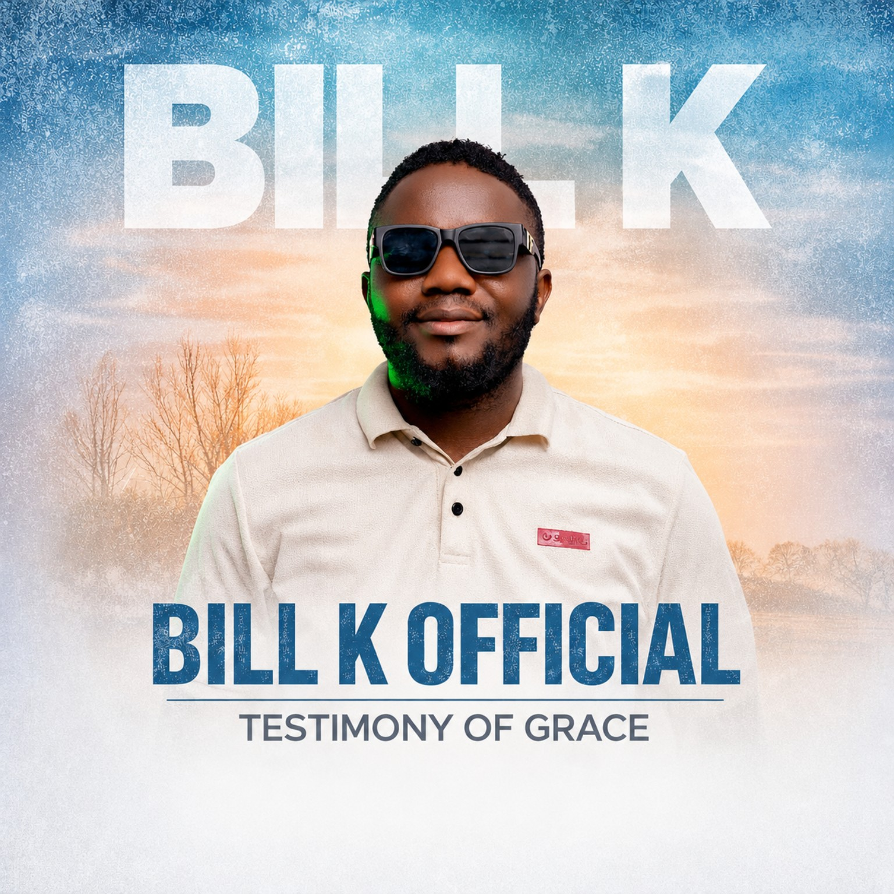

BILL K OFFICIAL
Worship
is lifestyle.
Music, testimony and ministry centered on Jesus Christ.
“But as for me and my house, we will serve the Lord.” — Joshua 24:15
THE HEART
A worship journey through music.
Bill K Official is a gospel music and ministry platform sharing songs, stories and moments that point people back to God.
MUSIC
Listen & discover
THE JOURNEY EP
One chapter. Six songs. One continuing story.
The Journey brings together Atunaaza, Akola, Kulwange, Sing to the Lord, Nasinga and Nsinza.
Listen on SpotifyMINISTRY
Worship is more than a song.
01
Worship
Creating spaces where people can turn their hearts toward God.
02
Music
Gospel music that carries testimony, joy, reflection and faith.
03
Community
Connecting with people through live moments, media and shared faith.
WATCH
On YouTube
▶
BILL K OFFICIAL
Music • Worship • Ministry
Watch the latest videos on the official YouTube channel.
BOOKING
Bring Bill K to your next worship moment.
For concerts, worship nights, church events and ministry engagements, get in touch directly.